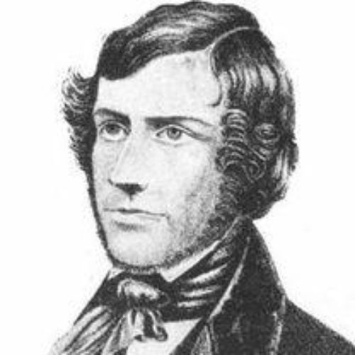

Biblioteca De Buraco Negros
História
O Que é Um Buraco Negro?
Em primeiro lugar para compreender mais detalhadamente essas estruturas, primeiro é preciso entender o básico. O que é um buraco negro afinal? O que o caracteriza? Os buracos negros são áreas do espaço-tempo que contém um campo gravitacional tão mais tão absurdamente intenso que nada, nem mesmo a luz, escapam de lá. Para onde toda essa matéria e energia vai? Ninguém sabe.
As Primeiras Ideias Da Existência Dos Buracos Negros
A ideia inicial de um astro tão massivo que poderia sugar até a luz, não é recente. Inicialmente foi proposta pelo astronomo e clérigo inglês John Michell em 23 de outrubro de 1783 em um artigo chamado Transações Filosóficas da Sociedade Real de Londres. Onde foi a primeira vez que foi citado a hipótese desses astros com massa hedionda, a qual ele chamou de "Estrelas Escuras". Na citação ele sugere:
"Se realmente deva existir na natureza corpos cuja densidade não é menor que a do sol e cujos diâmetros são mais de 500 vezes o diâmetro do sol, uma vez que a luz deles não poderia chegar até nós; ou se existirem outros corpos de tamanho um pouco menor, que não sejam naturalmente luminosos; da existência de corpos nessas circunstâncias, não poderíamos ter informações à vista; todavia, se qualquer outro corpo luminoso revolver sobre eles, talvez ainda, pelos movimentos desses corpos rotativos, possamos inferir a existência dos centrais com algum grau de probabilidade, pois isso pode fornecer uma pista para algumas das aparentes irregularidades dos corpos rotativos, que não seriam facilmente explicáveis em nenhuma outra hipótese; mas como as consequências de tal suposição são muito óbvias e a consideração delas um pouco além do meu objetivo atual, não as procurarei mais."
— John Michell, 1784

Logo, ele sugere que hajam muitas "Estrelas Escuras" pelo universo. Ele sugeriu aos astronômos procurem pelas tais "Estrelas Escuras" em sistemas estelares que a gravidade se comporte como se fosse a de duas estrelas, que aí, provavelmente seria a tal "Estrela Negra". Essa dica foi extremamente precisa, já que colaborou para as próximas teorias de buracos negros, além de que realmente ajudou os futuros astrônomos a criar hipóteses de sistemas binários compactos de Raio-X, ou seja, sistemas em que duas estrelas orbitando um baricentro comum, tendo uma com mais brilho e outra com menos, supostamente podem ser ou se tornar buracos negros.
Graças a John Michell, vários cientistas passaram a estudar a hipótese desses astros, como o matemático francês Pierre-Simon Laplace que também citou a mesma ideia em seu livro, Exposition du Système du Monde.
Os estudos de John Michell revolucionaram a ciência dos tempos atuais. Embora nos tempos em que estivesse vivo, sua teoria foi pouco notada.
A Relatividade Geral De Einstein Que Colaborou Para a Hipótese Dos Buracos Negros
Em 1915, Albert Einstein desenvolveu sua grande teoria da Relatividade Geral. Que também argumentava que a gravidade incluencia o movimento da luz.
Alguns meses depois, houve uma série de outros estudiosos contribuindo para a teoria:
Com Karl Schwarzschild encontrando uma solução para as equações do campo de Einstein, que seria uma série de equações que mostrariam como a matéria gera a gravidade e como a gravidade também pode afetar a matéria.
Depois Johannes Droste, um estudante de Hendrik Lorentz, de a mesma solução para a massa pontual de forma independete e extendeu as suas propriedades. Essa solução seria hoje o que chamamos de Raio de Schwarzschild mostrando um comportamento peculiar, onde o raio associado a matéria que extenderia seu horizonte de eventos caso a massa fosse concentrada em um único ponto de dimensões. Mostrando que alguns termos das equações de Einstein se tornaram infinitos. Nesses tempos, a natureza dos buracos negros ainda não era amplamente compreendida.
Arthur Eddington, no entanto, comentou em 1926 em seu livro sobre a possibilidade de uma estrela comprimida nesse tal Raio de Schwarzschild. Assim, criando uma densidade tão hediondamente forte que nem a luz escaparia, pois teria um campo gravitacional absurdamente forte.
Em 1931, Subrahmantan Chandrasekhar calculou usando a relatividade especial, que um corpo não rotativo de matéria degenarada de elétrons acima de certa massa limitante não consegue ser estável, trazendo o colapso. Outros cientistas contestaram como Eddigton e Lev Landau, que argumentavam que poderia ter algum mecanismo para impedir o colapso desse corpo, embora o mecanismo seria desconhecido. Eles estavam parcialmente certos, como uma anã branca levemente mais massiva passando do Limite de Chandrasekhar (O limite criado por Chandrasekhar para definir a certa massa que faria um corpo não rotativo colapsar), entraria em colapso e logo se transformaria em uma estrela de nêutrons, que acaba se tornando estável. Mas em 1939, Robert Oppenheimer e outros cientistas previram que as estrelas de nêutrons acima de outro limite, agora denominado Limite de Tolman-Oppenheimer-Volkoff, entrariam em colapso, concluindo-se que nenhuma lei da fisíca interviria no colapso desse corpo, fazendo com que ele se tornasse um buraco negro.
Oppenheimer e seus colaboradores interpretaram a singularidade do Raio de Schwarzschild como o indicador de uma fronteira de uma bolha na qual o tempo parou. Este ponto de vista é visível para quem está vendo de longe, mas não para quem ultrapassou o raio. Por causa dessa nova propriedade, as estrelas que colapsaram desse modo foram denominadas de "Estrelas Congeladas", porque um observador a distância veria a superfície da estrela congelada no tempo na hora em que seu colapso a levasse ao Raio de Schwarzschild.
A Era De Ouro
Em 1958, David Finkelstein analisou a superfície de Schwarzschild e a identificou como o Horizonte de Eventos, "Uma perfeita membrana unidirecional: Influências causais podem atravessá-la em apenas uma direção". Isso não contradiz por completo Oppenheimer, mas demonstra como é para os observadores que supostamente atravessariam um buraco negro. A solução proposta por Eddigton e David Finkelstein estendeu a solução de Schwarzschild para compreender a visão de alguém que cairia em um buraco negro, uma extensão mais completa já havia sido escrita por Martin Kruskal.
Esses novos estudos deram vida a Era de Ouro da Relatividade Geral. Sendo marcada obviamente pelos buracos negros e pela Relatividade Geral, sendo os principais objetivos de pesquisa. Esse processo foi ajudado também pela descoberta dos pulsares, que são estrelas de nêutrons que transforma a energia rotacional em energia eletromagnética, com a descoberta sendo feita por Jocelyn Bell Burnell em 1967. Que em 1969, mostrou que os pulsares na verdade são estrelas de nêutrons em uma rotação extraordinariamente rápida.
Nessa era foi achado mais soluções para os problemas teoricos dos buracos negros. Em 1963, Roy Kerr apresentou uma solução exata para explicar os buracos negros em rotação. Dois anos depois, Ezra Newman apresentou uma explicação para a Axissimétrica dos buracos negros. Utilizando-se do trabalho de Werner Israel, Brandon Carter e David robinson, o Teorema da Calvície surgiu.
Demonstrando um estágio estacionário para um buraco negro pelos três parâmetros da Métrica de Kerr-Newman: Massa, momento angular e carga elétrica.
Logo, houve suspeitas em relação as características esquisitas das propriedades dos buracos negros fossem questões patológicas das condições de simetria impostas e que as singularidades não apareciam em situações comuns.
Essa afirmação foi apoiada por Vladimir Belinsky, Isaak Khalatnikov e Evgeny Lifshitz. Contudo, no fim da década de 1960, Roger Penrose e Stephen Hawking usaram técnicas globais para provar que a singularidade no fim era um padrão.
O trabalho de James Bardeen, Jacob Bekenstein, Carter e Hawking no início da década de 1970 levou à criação da Termodinâmica Dos Buracos Negros. Essas leis demonstram o comportamento de um buraco negro se baseando nas Leis Da Termodinâmica, relacionando a massa à energia, área à entropia e gravidade da superfície à temperatura. Sendo concluido por Hawking, em 1974, mostrando que a Teoria Quântica de Campos implica que os buracos negros irradiam como um corpo negro com uma temperatura proporcional à gravidade da superfície do buraco negro. Prevendo o efeito agora chamado de Radiação Hawking.
Para ver a próxima página falando sobre as características,
Clique aqui

Luanne Gabrielle

Isis Diaz

Gabrielle Gaby